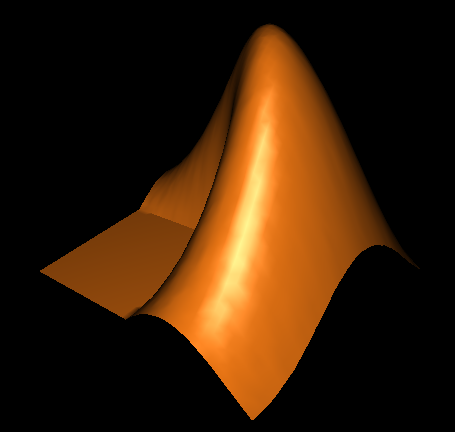

MATLAB 3D viewer demo 3
In this demo file, we will use the surface plot mode of the 3D viewer. It is a mode of rendering where a 3D surface mesh is created from a 2D image. Here, the pixel intensity of the 2D image is interpreted as the elevation (Z coordinates), which is enough to generate the 3D surface.
It is a mode which is particularly useful for images that have indeed a pixel intensity that can be interpreted as elevation, such as maps. Here, we try to use the surface plot mode of the 3D viewer with a surface well known to MATLAB users.
Contents
Make sure Java3D is installed
If not, try to install it
if ~IsJava3DInstalled(true) return end
Generate elevation data in MATLAB
This is the well known membrane dataset, that serves as a generator for the MATLAB logo.
This will generate a 51*51 image, for which intensity should be interpreted as height. It is not a 3D data per se, but its rendering will be.
Z = membrane(1,25);
The trouble is that Z is made of doubles, the most common MATLAB type, whether the 3D viewer only accepts 8-bit images. So we have do some conversion before rendering it. The following commands will stretch the range of Z to [0; 255] and cast to uint8.
Imin = min(Z(:)); Imax = max(Z(:)); I = uint8( 200 * (Z-Imin) / (Imax-Imin) );
Send data to the 3D viewer, through miji
Launch Miji
Miji(false);
We create an ImagePlus from the 2D image.
imp = MIJ.createImage('MATLAB peaks', I, false);
Create and display a new 3D universe.
universe = ij3d.Image3DUniverse(); universe.show();
Feed it the previous ImagePlus, but render it as a surface plot, where the intensity is encoded as height in a 3D space.
color = javax.vecmath.Color3f(240 / 255, 120 / 255, 20 / 255); c = universe.addSurfacePlot(imp, ... javax.vecmath.Color3f(), ... 'Matlab Peak in 3D', ... 1, ... [true true true], ... 1);
nFrames = 1
Rotate it a little, so that it shows the same orientation that of the actual MATLAB logo.
universe.resetView(); c.setColor(color); c.setTransform([1 0 0 0 0 1 0 0 0 0 1 0 0 0 0 1]); universe.fireContentChanged(c); universe.centerSelected(c); universe.rotateUniverse(javax.vecmath.Vector3d(-1, -0.5, +0.2), +120 * pi / 180);
Et voilà! A beautiful monochrome MATLAB logo, rendered in an accelerated 3D viewer. You can try the Fullscreen option in the View menu, to maximize your experience.
Note that it is monochrome: the MATLAB logo (type logo in the command window) has two colors: the close side is yellow-orange-ish and the back face is blueish. If you look at the logo.m code, you will see that MATLAB guys generated these colors using 2 different light source of 2 different colors, which you cannot do in the 3D viewer.

Jean-Yves Tinevez \<jeanyves.tinevez at gmail.com\>
Johannes Schindelin \<johannes.schindelin@gmx.de\>
- August 2011